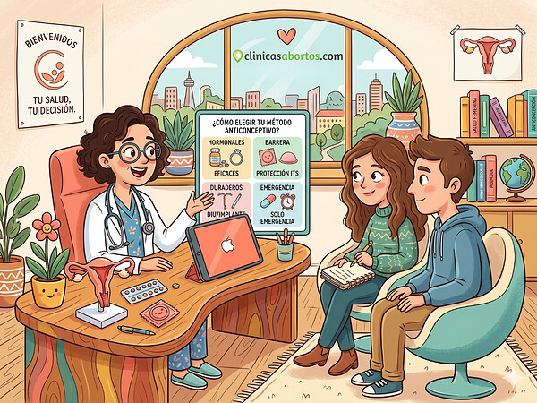

Protección

La protección en la salud sexual consiste en aplicar medidas y adoptar comportamientos que permitan cuidar la integridad física, emocional y psicológica de las personas, respetando sus derechos y su capacidad para tomar decisiones sobre su propio cuerpo. Su finalidad es garantizar que la sexualidad se viva de manera segura, libre, responsable y respetuosa, evitando situaciones que puedan afectar la salud, la dignidad o el bienestar personal. La protección sexual incluye el respeto por el consentimiento, el establecimiento de límites personales, el uso de métodos de barrera, la protección de la privacidad y la búsqueda de ayuda ante situaciones de violencia o abuso. También implica garantizar que todas las personas puedan acceder a información confiable y servicios de salud sin sufrir discriminación, vergüenza ni malos tratos.
Uno de los aspectos más importantes de la protección sexual es el respeto por el cuerpo y las decisiones personales. Todas las personas tienen derecho a decidir sobre su sexualidad y a establecer límites respecto a lo que desean o no desean hacer. Ninguna persona debe ser obligada, amenazada, manipulada o presionada para mantener relaciones sexuales o realizar actividades íntimas. El consentimiento debe ser libre y voluntario, y puede retirarse en cualquier momento. Tener una relación sentimental o haber aceptado una actividad anteriormente no significa que exista autorización permanente. Por ello, la comunicación clara, el respeto mutuo y la aceptación de las decisiones de la otra persona son fundamentales para construir relaciones saludables y proteger el bienestar de ambas partes.
La protección física también es fundamental para mantener una buena salud sexual. El uso correcto del preservativo externo o interno ayuda a reducir el riesgo de muchas infecciones de transmisión sexual y contribuye a prevenir embarazos. Además, es importante conocer las diferentes opciones anticonceptivas y recibir orientación profesional para elegir los métodos más adecuados según las necesidades personales. La protección también comprende el acceso a vacunas recomendadas, como las que previenen el virus del papiloma humano y la hepatitis B, así como la realización de pruebas de detección de ITS cuando corresponda. Estas medidas permiten cuidar la salud y actuar de manera oportuna ante posibles riesgos. Es importante recordar que la mayoría de los métodos anticonceptivos no protegen contra las ITS, por lo que el uso de preservativos continúa siendo una herramienta importante para reducir el riesgo de transmisión.
Otro elemento esencial es la protección de la salud emocional. Las relaciones sexuales y afectivas deben desarrollarse en un ambiente de confianza, respeto y seguridad, sin miedo, chantajes ni presiones. Proteger nuestro bienestar emocional significa reconocer las situaciones que nos generan incomodidad, aprender a expresar nuestros sentimientos y alejarnos de relaciones que afecten nuestra tranquilidad o autoestima. Los celos excesivos, el control constante, las amenazas, la manipulación y la insistencia para realizar actividades sexuales no deseadas son comportamientos que pueden indicar una relación perjudicial. Es importante comprender que el amor no justifica la violencia ni el control, y que todas las personas tienen derecho a sentirse seguras y respetadas dentro de una relación. Cuando existe malestar emocional o una situación que resulta difícil afrontar, buscar apoyo en personas de confianza o profesionales puede ayudar a proteger la salud mental.
La protección frente a la violencia sexual es indispensable para garantizar la dignidad y la seguridad de todas las personas. La violencia sexual comprende actos de carácter sexual realizados sin consentimiento, mediante fuerza, amenazas, intimidación, manipulación o abuso de poder. Puede presentarse en diferentes espacios, como el hogar, las instituciones educativas, el trabajo, las relaciones de pareja y los entornos digitales. Para protegerse, es importante reconocer las señales de abuso, establecer límites y buscar ayuda cuando una situación ponga en peligro la integridad personal. Nadie es responsable de la violencia que otra persona ejerce en su contra. Si alguien experimenta abuso o agresión sexual, debe priorizar su seguridad y acudir a una persona de confianza, a los servicios sanitarios o a los organismos de protección correspondientes. Ante un peligro inmediato, es necesario contactar con los servicios de emergencia locales.